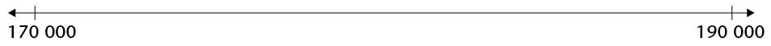

1 Working with whole numbers
In this chapter you will learn more about whole numbers. You will learn about different ways to express whole numbers as sums and products. You will learn about different ways of doing calculations, and different ways of recording your work when doing calculations. You will strengthen your skills to do calculations and to solve problems.
1.1 Revision
Do not use a calculator at all in section 1.1.
build numbers up and break numbers down
-
Write each of the following sums as a single number:
The word sum is used to indicate two or more numbers that have to be added.
-
\( 4 000 + 800 + 60 + 5\)
\( 8 000 + 300 + 7\)
\( 40 000 + 9 000 + 200 + 3\)
\( 800 000 + 70 000 + 3 000 + 900 + 2\)
-
\( 8 \text{ thousands} + 7 \text{ hundreds} + 8 \text{ units}\)
\(4 \text{ hundred thousands} + 8 \text{ ten thousands} + 4 \text{ hundreds} + 9 {\text{ tens}
The answer obtained when the numbers are added, is also called the sum. We say: 20 is the sum of 15 and 5.
-
-
What is the sum of \(8 000\) and \(24\)?
-
Write each of the numbers below as a sum of units, tens, hundreds, thousands, ten thousands and hundred thousands, like the numbers were given in question 1(e) and (f).
When a number is written as a sum of units, tens, hundreds, thousands etc., it is called the expanded notation.
-
\(8 706 =\)
\(449 203 =\)
\(83 490 = \)
\(873 092 =\)
-
Arrange the numbers in question 3 from smallest to biggest.
-
Write the numbers in expanded notation (for example, \(791 = 700 + 90 + 1\)).
-
\(493 020\)
\(409 302\)
\(490 032 \)
\(400 932\)
-
Arrange the numbers in question 5 from biggest to smallest.
Write each sum as a single number.
-
\(600 000 + 40 000 + 27 000 + 100 + 20 + 34\)
\(320 000 + 40 000 + 8 000 + 670 + 10 + 5 \)
\( 500 000 + 280 000 + 7 000 + 300 + 170 + 38\)
\( 4 \text{ hundred thousands} + 18 \text{ ten thousands} + 4 \text{ hundreds} + 29 \text{ tens} + 5 \text{ units}\)
-
Write each sum as a single number.
-
\(300 000 + 70 000 + 6 000 + 400 + 80 + 6\)
\(400 000 + 20 000 + 2 000 + 500 + 10 + 3 \)
\( 500 000 + 40 000 + 7 000 + 300 + 60 + 6\)
\(800 000 + 90 000 + 7 000 + 800 + 90 + 8\)
\(300 000 + 110 000 + 12 000 + 400 + 110 + 3\)
-
In each case, add the two numbers. Write the answer in expanded form and also as a single number.
-
(a) The number in 8(a) and the number in 8(b)
The number in 8(c) and the number in 8(b)
The number in 8(c) and the number in 8(a)
The number in 8(d) and the number in 8(a)
-
-
Subtract the number in 8(b) from the number in 8(d).
Are the numbers in 8(b) and 8(e) the same?
Subtract the number in 8(a) from the number in 8(b).
Write each of the following products as a single number:
The word product is used to indicate two or more numbers that have to be multiplied.
-
\(2 \times 3\)
\(2 \times 3 \times 5\)
\(2 \times 3 \times 5 \times 7\)
\(2 \times 3 \times 5 \times 7 \times 2\)
-
\(2 \times 3 \times 5 \times 7 \times 2 \times 2\)
The answer obtained when numbers are multiplied, is also called the product. We say: 20 is the product of 2 and 10.
-
-
-
What is the product of 20 and 500?
Write 1 000 as a product of 5 and another number.
Write 1 000 as a product of 50 and another number.
Write 1 000 as a product of 25 and another number.
What is the product of 2 500 and 4?
What is the product of 250 and 40?
-
In the table on the right, the number in each yellow cell is formed by adding the number in the red row above it to the number in the blue column to its left. Write the correct numbers in all the empty yellow cells.
\(+\)
2
3
4
5
10
20
30
34
40
50
60
63
65
70
-
The table below is formed in the same way as the table on the right. Fill in all the cells for which you know the answers immediately. Leave the other cells open for now.
\(+\)
8
5
4
9
7
3
6
18
36
57
7
64
3
6
9
5
8
6
4
multiples
In the arrangement below, the blue dots are in groups like this:

The red dots are in groups like this:

How would you go about finding the number of blue dots below, if you do not want to count them one by one?
-
Implement your plan, to find out how many blue dots there are.

Suppose you want to know how many black dots there are in the arrangement on page 6. One way is to count in groups of three. When you do this, you may have to point with your finger or pencil to keep track.
The counting will go like this: three, six, nine, twelve, fifteen, eighteen . . .
Another way to find out how many black dots there are is to analyse the arrangement and do some calculations. In the arrangement, there are ten rows of threes from the top to the bottom, and three columns of threes from left to right, just as in the table alongside.
3
3
3
3
3
3
3
3
3
3
3
3
3
3
3
3
3
3
3
3
3
3
3
3
3
3
3
3
3
3
One way to calculate the total number of black dots is to do \(3 \times 10 = 30\) for the dots in each column, and then \(30 + 30 + 30 = 90\). Another way is to add up in each row \((3 + 3 + 3 = 9)\) and then multiply by 10: \(10 \times 9 = 90\). A third way is to notice that there are \(3 \times 10 = 30\) groups of three, so the total is \(3 \times 30 = 90\).
-
When you determined the number of blue dots in question 1(b), did you count in fives, or did you analyse and calculate, or did you use some other method? Now use a different method to determine the number of blue dots and check whether you get the same answer as before. Describe the method that you now use.
The numbers that you get when you count in fives are called multiples of five. Draw circles around all the multiples of 5 in the table below.
1
2
3
4
5
6
7
8
9
10
11
12
13
14
15
16
17
18
19
20
21
22
23
24
25
26
27
28
29
30
31
32
33
34
35
36
37
38
39
40
41
42
43
44
45
46
47
48
49
50
51
52
53
54
55
56
57
58
59
60
61
62
63
64
65
66
67
68
69
70
71
72
73
74
75
76
77
78
79
80
81
82
83
84
85
86
87
88
89
90
91
92
93
94
95
96
97
98
99
100
101
102
103
104
105
106
107
108
109
110
111
112
113
114
115
116
117
118
119
120
-
How many red dots are there in the arrangement on page 6? Describe the method that you use to find this out.
-
Underline all the multiples of 7 in the table in question 3.
-
Which multiples of 5 in the table are also multiples of 7?
A number that is a multiple of 5, and also a multiple of 7, is called a common multiple of 5 and 7.
How many yellow dots are there in the arrangement on page 6? Describe the method that you use to find this out.
- (a) Cross out all the multiples of 9 in the table in question 3.
-
(b) Which numbers in the table in question 3 are common multiples of 7 and 9?
- Look at the numbers in the yellow cells of the table below. How are these numbers formed from the numbers in the red row and the numbers in the blue column?
Fill in all the cells for which you know the answers immediately. Leave the other cells open for now.
\(\times\)
8
5
4
9
7
3
6
2
10
20
7
3
9
90
5
20
8
6
4
2
10
50
20
60
Write down the first thirteen multiples of each of the numbers in the column on the left. The multiples of 4 are already written in, as an example.
|
1 |
2 |
3 |
4 |
5 |
6 |
7 |
8 |
9 |
10 |
11 |
12 |
13 |
|
2 |
||||||||||||
|
3 |
||||||||||||
|
4 |
8 |
12 |
16 |
20 |
24 |
28 |
32 |
36 |
40 |
44 |
48 |
52 |
|
5 |
||||||||||||
|
6 |
||||||||||||
|
7 |
||||||||||||
|
8 |
||||||||||||
|
9 |
||||||||||||
|
10 |
||||||||||||
|
11 |
||||||||||||
|
12 |
||||||||||||
|
13 |
Complete this table. For some cells, you may find your table of multiples above helpful.
|
\(\times\) |
6 |
5 |
7 |
9 |
4 |
5 |
3 |
8 |
10 |
50 |
|
8 |
||||||||||
|
6 |
||||||||||
|
7 |
||||||||||
|
9 |
||||||||||
|
5 |
||||||||||
|
3 |
||||||||||
|
4 |
||||||||||
|
2 |
Go back to the table in question 8(b). If you can easily fill in the numbers in some of the open spaces now, do it.
Suppose there are 10 small black spots on each of the yellow dots in the arrangement on page 6. How many small black spots would there be on all the yellow dots together, in the arrangement on page 6?

multiples of 10, 100, 1 000 and 10 000
How many spotted yellow dots are there on page 11? Explain what you did to find out.
How many learners are there in your class?
Suppose each learner in the class has a book like this. How many spotted yellow dots are there on the same page (that is, on page 11) of all these books together?
Each yellow dot has 10 small black spots, as you can see on this enlarged picture.
-
How many small black spots are there on page 11?
How many small black spots are there on page 11 in all the books in your class?
Here is a very big enlargement of one of the black spots on
the yellow dots. There are 10 very small white spots on each small black spot. How many very small white spots are there on all the black spots on page 11 together?

How many very small white spots are there on 10 pages like page 11?
How many very small white spots are there on 100 pages like page 11?
10 tens are a hundred: \(10 \times 10 = 100\)
10 hundreds are a thousand:\( 10 \times 100 = 1 000\)
10 thousands are a ten thousand: \(10 \times 1 000 = 10 000\)
10 ten thousands are a hundred thousand: \(10 \times 10 000 = 100 000\)
10 hundred thousands are a million: \(10 \times 100 000 = 1 000 000\)

-
Write \(7 000 + 600 + 80 + 4\) as a single number.
Write 10 times the number in (a) in expanded notation and as a single number.
Write 100 times the number in (a) in expanded notation and as a single number.
Write each of the following numbers in expanded notation:
-
746
7 460
74 600
746 000
7 460 000
Write 10 000 as a product of 10 and one other number.
Write 10 000 as a product of 100 and one other number.
Write 100 000 as a product of 10 and one other number.
Write 100 000 as a product of 1 000 and one other number.
Write 1 000 000 as a product of 1 000 and one other number.
In the table below, fill in all the cells for which you know the answers immediately. Leave the other cells open for now.
\(\times\)
10
20
30
40
50
60
70
80
90
100
2
3
4
5
6
7
8
9
10
11
12
Fill in all the cells in the table for which you know the answers immediately. Leave the other cells open for now.
\(\times\)
100
200
300
400
500
600
2
3
4
5
6
7
8
9
10
11
12
How many multiples of 10 are smaller than 250? You may make an estimate, and then write the multiples down to check.
-
Estimate:
Check:
In each case first estimate, then check by writing all the multiples down and counting them.
-
How many multiples of 100 are smaller than 2 500?
How many multiples of 250 are smaller than 2 500?
-
How many numbers smaller than 2 500 are multiples of both 100 and 250?
-
How many numbers smaller than 2 500 are multiples of both 250 and 400?
In each of the tins below, there are three R10 notes, three R20 notes, three R100 notes and three R200 notes.

Zain wants to know what the total value of all the R10 notes in all the tins is. He decides to find this out by counting in 30s, so he says: thirty, sixty, ninety . . . and so on while he points at one tin after another.
-
Complete what Zain started to do.
-
Count in 300s to find out what the total value of all the R100 notes in all the tins is.
How much money is there in total in the eight yellow tins in question 13?
Join with two classmates and tell them how you worked to find the total amount of money.
Investigate what is easiest for you, to count in twenties or in thirties or in fifties, up to 500.
Many people find it easier to count in fifties than in thirties. Why do you think this is so?
What do you expect to be the most difficult, to count in forties or in seventies or in nineties? Investigate this and write a short report.
Here is some advice that can make it easier to count in certain counting units, for example in seventies.
It feels easier to count in fifties than in seventies because you get to multiples of 100 at every second step:
fifty, hundred, one hundred and fifty, two hundred, two hundred and fifty, 300,
350, 400, 450, 500 ... and so on.
When you count in seventies, this does not happen:
seventy, one hundred and forty, two hundred and ten, two hundred and eighty ...
It may help you to cross over the multiples of 100 in two steps each time, like this:
70 + 30 \(\rightarrow\)100 + 40 \(rightarrow\) 140 + 60 \(\rightarrow\) 200 + 10 \(\rightarrow\) 210 + 70 \(\rightarrow\) 280 ...

30 + 40 = 70 60 + 10 = 70
In this way, you make the multiples of 100 act as "stepping stones" for your counting.
-
Count in forties up to 1 000. Try to use multiples of 100 as stepping stones. You can write the numbers below while you count.
Write down the first twenty multiples of 80.
Write down the first twenty multiples of 90.
Write down the first ten multiples of 700.
Complete this table.
\(\times\)
60
50
70
90
40
20
30
80
8
6
7
9
5
3
4
2
70
30
60
80
40
90
50
20
doubling and halving
Write the next eight numbers in each pattern:
-
1 2 4 8 16 32
3 6 12 24
5 10 20 40
5 10 15 20
6 12 24 48
-
Which pattern or patterns in question 1 are not formed by repeated doubling?
Write the first nine terms of the repeated doubling patterns that start with the numbers in the left column of the table. The pattern for 13 has been completed as an example.
2
3
4
5
6
7
8
9
10
11
12
13
26
52
104
208
416
832
1 664
3 328
14
15
16
17
18
19
Doubling can be used to do multiplication.
For example, \(29 \times 8\) can be calculated as follows:
8 doubled is 16, so \(16 = 2 \times 8\) (step 1)
16 doubled is 32, so \(32 = 4 \times 8\) (step 2)
32 doubled is 64, so \(64 = 8 \times 8\) (step 3)
64 doubled is 128, so \(128 = 16 \times 8\) (step 4). Doubling again will go past \(29 \times 8\).
\(16 \times 8 + 8 \times 8 + 4 \times 8 = (16 + 8 + 4) \times 8 = 28 \times 8\).
So \(28 \times 8 = 128 + 64 + 32\) which is 224. So \(29 \times 8 = 224 + 8 = 232\).
-
Work as in the above example to calculate each of the following. Write only what you need to write.
-
\(37 \times 21\)
\( 17 \times 41\)
-
-
Continue each repeated halving pattern as far as you can:
-
1 024 512 256 128
64 000 32 000 16 000 8 000
Halving can also be used to do multiplication.
For example, \( 37 \times 28\) can be calculated as follows:
\(100 \times 28 = 2 800\). Half of that is \(50 \times 28\) which is half of 2 800, that is 1 400.
Half of \(50 \times 28\) is half of 1 400, so \(25 \times 28\) is 700.
\(10 \times 28 = 280\(, so \(25 \times 28 + 10 \times 28 = 980\), so \(35 \times 28 = 980\).
\(2 \times 28 = 2 \times 25 + 2 \times 3 = 56\), so \(37 \times 28\) is \(980 + 56 = 1 036\).
-
-
\(80 \times 78 = 6 240\). Use this information to work out each of the following:
\(20 \times 78\)
-
\(37 \times 78\)
If chickens cost R27 each, how many chickens can you buy with R2 400? A way to use halving to work this out is shown on the next page.
100 chickens cost (100 \(\times\) 27 = R2 700. That is more than R2 400. 50 chickens cost half as much, that is R1 350.
So I can buy 50 chickens and even more.
Half of 50 is 25 and half of R1 350 is R675.
So 75 chickens cost R1 350 + R675, which is R2 025. So there is R375 left.
10 chickens cost R270, so 85 chickens cost R2 025 + R270 = R2 295. There is R105 left.
3 chickens cost 3 \( \times\) R25 + 3 \(\times\) R2 = R81.
I can buy 88 chickens and that will cost R2 376.
Total cost
Thinking
100
R2 700
50
R1 350
half of R2 700
25
R675
half of R1 350
75
R2 025
50 + 25 chickens
10
R270
10 \times R27
85
R2 295
75 + 10 chickens
3
R81
3 \times R27
88
R2 376
85 + 3 chickens
Use halving as in the above example to work out how many books at R67 each a school can buy with R5 000.
Total cost
Thinking
The pattern 3 6 12 24 48 ... may be called the repeated doubling pattern that starts with 3.
using multiplication to do division
R7 500 must be shared between 27 netball players. The money is in R10 notes, and no small change is available.
-
How much money will be used to give each player R100?
Do you think there is enough money to give each player R200?
Do you think there is enough money to give each player R300?
How much of the R7 500 will be left over, if each player is given R200?
Is there enough money left to give each player R50 more, in other words a total of R250 each?
What is the highest amount that can be given to each player, so that less than R270 is left over? Remember that you cannot split up the R10 notes.
-
Work like you did in question 1 to solve this problem:
There is 4 580 m of string on a big roll. How many pieces of 17 m each can be cut from this roll?
Hint: You may start by asking yourself how much string will be used if you cut off 100 pieces of 17 m each.
-
Work like you did in questions 1 and 2 to solve this problem:
A shop owner has R1 800 available with which he can buy chickens from a farmer. The farmer wants R26 for each chicken. How many chickens can the shop owner buy?
What you actually did in questions 1, 2 and 3 was to calculate \(7 500 \div 27\), \(4 580 \div 17\) and \(1 800 \div 26\). You solved division problems. Yet most of the work was to do multiplication, and a little bit of subtraction.
When you had to calculate \(1 800 \div 26\) in question 3, you may have asked yourself:
With what must I multiply 26, to get as close to 1 800 as possible?
Division is called the inverse of multiplication.
Multiplication is called the inverse of division.
Multiplication and division are inverse operations.
1.2 Ordering and comparing whole numbers
how far can you count, and how far is far?
-
How long will it take to count to a million? Let us say it takes one second to count each number. Find out how long is one million seconds. Work in your exercise book. Give your final answer in days, hours and seconds.
Write 234 500 320 in words.
In each case insert one of the symbols > or < to indicate which number is the smaller of the two.
-
876 243 ◻ 876 234
-
534 616 ◻ 543 016
-
701 02 1 ◻ 698 769
-
103 232 ◻ 99 878
-
-
In each case place the numbers on the number line as carefully as you can.
-
185 000; 178 000; 170 900; 180 500

-
1 110 000; 1 102 900; 1 100 500; 1 105 050

The first row in the table shows the average distances of the planets from the Sun. These distances are given in millions of kilometres.
The distances from the Sun are called average distances, because the planets are not always the same distance from the Sun. Their orbits are not circles.
One million kilometres is 1 000 000 km.
Planet
Mercury
Venus
Earth
Mars
Jupiter
Saturn
Uranus
Neptune
Distance from the Sun
58 million
km
108 million
km
150 million
km
228 million
km
778 million
km
1 427
million
km
2 870
million
km
4 497
million
km
Equatorial diameter
4 880
km
12 102
km
12 756
km
6 794
km
142 800
km
120 000
km
52 400
km
49 500
km
The information in the table is also given in the drawings on page 2. Study the top drawing to find out what equatorial diameter means.
-
-
Which planet is the second farthest planet from the Sun?
-
How does Mars' distance from the Sun compare to that of Venus? Give two possible answers.
-
Arrange the planets from the smallest to the biggest.
Sometimes we do not need to know the exact number or exact amount. We say a loaf of bread costs about R10, or a bag of mealie meal costs about R20. The loaf of bread may cost R8 or R12 but it is close to R10. The mealie meal may cost R18 or R21 but it is close to R20.
When you read in a newspaper that there were 15 000 spectators at a soccer game, you know that that is not the actual number. In the language of mathematics we call this process rounding off or rounding.
rounding to 5s, 10s, 100s and 1 000s
To round off to the nearest 5, we round numbers that end in 1 or 2, or 6 or 7 down to the closest multiple of 5. We round numbers that end in 3 or 4, or 8 or 9 up to the closest multiple of 5.
For example, 233 is rounded down to 230, 234 is rounded up to 235, 237 is rounded down to 235 and 238 is rounded up to 240.
Round the following numbers to the nearest 5 by checking the unit value:
-
612
-
87
-
454
-
1 328
To round off to the nearest 10, we round numbers that end in 1, 2, 3 or 4 down to the closest multiple of 10 (or decade). We round numbers that end in 5, 6, 7, 8 or 9 up to the closest multiple of 10.
For example, if you want to round off 534 to the nearest 10, you have to look at the units digit. The units digit is 4 and it is closer to 0 than to 10. The rounded off number will be 530.
-
-
Round the following numbers to the nearest 10 by checking the unit value:
12
87
454
1 325
When rounding to the nearest 100, we look at the last two digits of the number. If the number is less than 50 we round down to the lower 100. If the number is 50 or more we round up to the higher 100.
-
Complete the table.
Round to the nearest 5
Round to the nearest 10
Round to the nearest 100
681
680
680
700
5 639
5 640
5 640
5 600
5 361
5 360
5 360
5 400
12 458
12 460
12 460
12 500
When rounding to the nearest 1 000, we look at the hundreds. Is the hundreds value less than, equal to or greater than 500? If less than 500, round down (the thousands value stays the same), if equal to 500 round up, and if greater than 500 round up too.
-
Complete the table.
Round to the nearest 1 000
Round to the nearest 10 000
142 389
343 621
356 552
100 489
1.3 Factors, prime numbers and common multiples
different ways to produce the same number
The number 80 can be produced by multiplying 4 and 20: 4 \times 20 = 80.
The number 80 can also be produced by multiplying 5 and 16.
1. In what other ways can 80 be produced by multiplying two numbers?
The number 80 can also be produced by multiplying 2, 10 and 4:
2 \times 10 = 20 and 20 \times 4 = 80 or 10 \times 4 = 40 and 40 \times 2 = 80.
We can use brackets to describe what calculation is done first. So instead of writing "2 \times 10 = 20 and 20 \times 4 = 80" we may write (2 \times 10) \times 4. Instead of writing "10 \times 4 = 40 and 40 \times 2" we may write 2 \times (10 \times 4).
2. Show how the number 80 can be produced by multiplying four numbers. Describe how you do it in two ways: without using brackets and by using brackets.
3. Show three different ways in which the number 30 can be produced by multiplying two numbers.
4. (a) Can the number 30 be produced by multiplying three whole numbers?
Which three whole numbers?
(b) Can the number 30 be produced by multiplying four whole numbers that do not include the number 1?
If you answered "yes", which four numbers?
The number 105 can be produced by multiplying 3, 5 and 7, hence we can write
105 = 3 \times 5 \times 7. Mathematicians often describe this by saying "105 is the product of 3, 5 and 7" or "105 can be expressed as the product 3 \times 5 \times 7".
5. Express each of the following numbers as a product of three numbers.
(a) 248
(b) 375
The whole numbers that are multiplied to form a number are called factors of the number. For example, 6 and 8 are factors of 48 because 6 \times 8 = 48.
But 6 and 8 are not the only numbers that are factors of 48. 2 is also a factor of 48 because 48 = 2 \times 24. And 24 is a factor of 48. The numbers 3 and 16 are also factors of 48 because 48 = 3 \times 16.
6. Describe all the different ways in which 48 can be expressed as a product of two factors.
The number 36 can be formed by 2 \times 2 \times 3 \times 3. Because 2 is used twice, it is called a repeated factor of 36. The number 3 is also a repeated factor of 36.
7. (a) Express 48 as a product of three factors.
(b) Express 75 as a product of three factors.
8. (a) Can 36 be expressed as a product of three factors? How?
(b) Can 36 be expressed as a product of five factors? How?
9. Express each of the following numbers as a product of as many factors as possible, including repeated factors. Do not use 1 as a factor.
(a) 300 (b) 310
(c) 320 (d) 330
(e) 340 (f) 350
prime numbers
1. Express each of the following numbers as a product of as many factors as possible, including repeated factors. Do not use 1 as a factor.
(a) 36
(b) 37
(c) 38
(d) 39
(e) 40
(f) 41
(g) 42
(h) 43
(i) 44
(j) 45
(k) 46
(l) 47
(m) 48
(n) 49
2. Which of the numbers in question 1 cannot be expressed as a product of two whole numbers, except as the product 1 \times the number itself?
A number that cannot be expressed as a product of two whole numbers, except as the product 1 \times the number itself, is called a prime number.
3. (a) Which of the numbers in question 1 are prime?
(b) Which numbers between 20 and 30 are prime?
(c) Are 11 and 17 prime numbers?
Eratosthenes, a Greek mathematician who lived a long time ago, designed a method to find the prime numbers. The process is called "the sieve of Eratosthenes".
4. Work on the table on the right.
Follow the steps to find all the prime numbers up to 100.
|
Step 1: Cross out 1. Step 2: Circle 2, and then cross out all the multiples of 2. Step 3: Circle 3, then cross out all the multiples of 3. Step 4: Find the next number that has not been crossed out and cross out all its multiples. Continue like this. |
1 |
2 |
3 |
4 |
5 |
6 |
7 |
8 |
9 |
10 |
|
11 |
12 |
13 |
14 |
15 |
16 |
17 |
18 |
19 |
20 |
|
|
21 |
22 |
23 |
24 |
25 |
26 |
27 |
28 |
29 |
30 |
|
|
31 |
32 |
33 |
34 |
35 |
36 |
37 |
38 |
39 |
40 |
|
|
41 |
42 |
43 |
44 |
45 |
46 |
47 |
48 |
49 |
50 |
|
|
51 |
52 |
53 |
54 |
55 |
56 |
57 |
58 |
59 |
60 |
|
|
61 |
62 |
63 |
64 |
65 |
66 |
67 |
68 |
69 |
70 |
|
|
71 |
72 |
73 |
74 |
75 |
76 |
77 |
78 |
79 |
80 |
|
|
81 |
82 |
83 |
84 |
85 |
86 |
87 |
88 |
89 |
90 |
|
|
91 |
92 |
93 |
94 |
95 |
96 |
97 |
98 |
99 |
100 |
5. (a) What is the smallest number that can be formed as a product of three prime numbers, if the same factor may be repeated?
(b) What is the smallest number that can be formed as a product of three prime numbers, if no repeated factors are allowed?
6. Manare did a lot of work, and found out that 840 can be formed as the product of 2, 2, 2, 3, 5 and 7. Check whether Manare is correct.
We can say that Manare found the prime factors of 840, or Manare factorised 840 completely.
7. The prime factors of some numbers are given below. What are the numbers?
(a) 3, 5, 5 and 11 (b) 3, 3, 5 and 7 (c) 2, 7, 11 and 13
8. Investigate which of the following statements you agree with. Give reasons for your agreement or disagreement in each case.
(a) If a number is even, 2 is one of its prime factors.
(b) If half an even number is also even, 2 is a repeated prime factor.
(c) If a number is odd, 3 is one of its prime factors.
(d) If a number ends in 0 or 5, then 5 is one of its prime factors.
Here is a method to find the prime factors of a number:
If the number is even, divide it by 2. If the answer is even, divide by 2 again. Continue like this as long as it is possible. If the answer is odd, divide by 3, if it is possible. Continue to divide by 3 as long as it is possible. Then switch to 5. Continue like this by each time trying to divide by the next prime number.
9. Find all the prime factors of each of the following numbers. Work in your exercise book or on loose paper, and write only your answers below.
(a) 588
(b) 825
(c) 729
(d) 999
(e) 538
(f) 113
10. Find at least three prime numbers between 800 and 850.
highest common factor and lowest common multiple
1. (a) Factorise 195 and 385 completely.
(b) Is 7 a factor of both 195 and 385?
(c) Is 5 a factor of both 195 and 385?
When a number is a factor of two or more other numbers, it is called a common factor of the other numbers. For example, the number 5 is a common factor of 195 and 385.
The factors of a certain number are 2; 2; 5; 7; 7; 11 and 17. The factors of another number are 2; 3; 3; 7; 7; 11; 13 and 23. The common prime factors of these two numbers are 2; 7; 7 and 11.
The biggest number that is a factor of two or more numbers is called the highest common factor (HCF) of the numbers.
2. Find the HCF of the two numbers in each of the following cases.
(a) 2 \times 2 \times 5 \times 7 \times 7 \times 11 \times 17 and 2 \times 3 \times 3 \times 7 \times 7 \times 11 \times 13 \times 23
(b) 24 and 40 (c) 8 and 12
(d) 12 and 20 (e) 210 and 56
3. Write five different numbers, all different from 35, that have 35 as a highest common factor.
4. Write the next seven numbers in each pattern:
A: 12 24 36 48
B: 15 30 45 60
The numbers in pattern A are called the multiples of 12. The numbers in pattern B are called the multiples of 15. The numbers, for example 60 and 120, that occur in both patterns, are called the common multiples of 12 and 15. The smallest of these numbers, namely 60, is called the lowest common multiple (LCM) of 12 and 15.
5. Continue writing multiples of 18 and 24 below, until you find the LCM:
18 36
24 48
6. Find the HCF and LCM of the given numbers in each case below:
(a) 5 and 7 (b) 15 and 14
(c) 20 and 30 (d) 10 and 100
(e) 8 and 9 (f) 25 and 24
(g) 8 and 12 (h) 10 and 18

1.4 Properties of operations
order of operations and the associative property
Suppose you want to tell another person to do some calculations. You may do this by writing instructions. For example, you may write the instruction 200 - 130 - 30. This may be called a numerical expression.
Suppose you have given the instruction 200 - 130 - 30 to two people, whom we will call Ben and Sara.
This is what Ben does: 200 - 130 = 70 and 70 - 30 = 40.
This is what Sara does: 130 - 30 = 100 and 200 - 100 = 100.
To prevent such different interpretations or understandings of the same numerical expression, mathematicians have made the following agreement, and this is followed all over the world:
An agreement like this is called a mathematical convention.
In a numerical expression that involves addition and subtraction only, the operations should be performed from left to right, unless otherwise indicated in some way.
1. Who followed this convention in the above story, Ben or Sara?
2. Follow the above convention and calculate each of the following:
(a) 8 000 + 6 000 - 3 000
(b) 8 000 - 3 000 + 6 000
(c) 8 000 + 3 000 - 6 000
3. Follow the above convention and calculate each of the following:
(a) R25 000 + R30 000 + R13 000 + R6 000
(b) R13 000 + R6 000 + R30 000 + R25 000
(c) R30 000 + R25 000 + R6 000 + R13 000
In question 3, all your answers should be the same. When three or more numbers are added, the order in which you perform the calculations makes no difference. This is called the associative property of addition. We also say: addition is associative.
4. Investigate whether multiplication is associative. Use the numbers 2, 3, 5 and 10.
5. What must be added to each of the following numbers to get 100?
73 56 66 41 34 23 88
6. Calculate each of the following. Note that you can make the work simple by being smart in deciding which additions to do first.
(a) 73 + 54 + 27 + 46 + 138 (b) 34 + 88 + 41 + 66 + 59 + 12 + 127
the commutative property of addition and multiplication
1. (a) What is the total cost of 20 chairs at R250 each?
(b) What is the total cost of 250 exercise books at R20 each?
(c) R5 000 was paid for 100 towels. What is the price for 1 towel?
(d) R100 was paid for 5 000 beads. What is the price for 1 bead?
2. Which of the following calculations will produce the same answer? Mark those that will produce the same answers with a ✓ and those that won't with a ✗.
(a) 20 \times 250 and 250 \times 20 (b) 5 000 \div 100 and 100 \div 5 000
(c) 730 + 270 and 270 + 730 (d) 730 - 270 and 270 - 730
25 + 75 and 75 + 25 have the same answer. The same is true for any other two numbers. We say: addition is commutative; the numbers can be swopped around.
3. Demonstrate each of your answers with two different examples.
(a) Is subtraction commutative?
(b) Is multiplication commutative?
(c) Is division commutative?
more conventions and the distributive property
1. Do the following:
(a) Multiply 5 by 3, then add the answer to 20.
(b) Add 5 to 20, then multiply the answer by 5.
Mathematicians have agreed that unless otherwise indicated, multiplication and division should be done before addition and subtraction. According to this convention, the expression 20 + 5 \times 3 should be taken to mean "multiply 5 by 3, then add the answer to 20" and not "add 5 to 20, then multiply the answer by 3".
2. Follow the above convention and calculate each of the following:
(a) 500 + 20 \times 10
(b) 500 - 20 \times 10
(c) 500 + 20 - 10
(d) 500 - 20 + 10
(e) 500 + 200 \div 5
(f) 500 - 200 \div 5
If some of your answers are the same, you have made mistakes.
The above convention creates a problem. How can one describe the calculations in question 1(b) with a numerical expression, without using words?
To solve this problem, mathematicians have agreed to use brackets in numerical expressions. Brackets are used to specify that the operations within the brackets should be done first. Hence the numerical expression for 1(b) above is (20 + 5) \times 5, and the answer is 125.
Examples
The expression 12 + 3 \times 5 means "multiply 3 by 5, then add 12". It does not mean "add 12 and 3, then multiply by 5".
If you wish to say "add 5 and 12, then multiply by 3", the numerical expression should be 3 \times (5 + 12) or (5 + 12) \times 3. They mean the same.
If there are no brackets in a numerical expression, it means that multiplication and division should be done first, and addition and subtraction only later.
3. Keep the various mathematical conventions about numerical expressions in mind when you calculate each of the following:
(a) 500 + 30 \times 10 (b) (500 + 30) \times 10
(c) 100 \times 500 + 30 (d) 100 \times (500 + 30)
(e) 500 - 30 \times 10 (f) (500 - 30) \times 10
(g) 100 \times 500 - 30 (h) 100 \times (500 - 30)
(i) (200 + 300) \div 20 (j) 200 \div 20 + 300 \div 20
(k) 600 \div (20 + 30) (l) 600 \div 20 + 600 \div 30
4. Calculate the following:
(a) 50 \times (70 + 30) (b) 50 \times 70 + 50 \times 30
(c) 50 \times (70 - 30) (d) 50 \times 70 - 50 \times 30
Your answers for 4(a) and 4(b) should be the same.
Your answers for 4(c) and 4(d) should also be the same.
5. Do not do calculations A to I below. Just answer these questions about them. You will check your answers later.
(a) Will A and B have the same answers?
(b) Will G and H have the same answers?
(c) Will A and D have the same answers?
(d) Will A and G have the same answers?
(e) Will A and F have the same answers?
(f) Will D and E have the same answers?
A: 5 \times (200 + 3) B: 5 \times 200 + 3
C: 5 \times 200 + 5 \times 3 D: 5 + 200 \times 3
E: (5 + 200) \times 3 F: (200 + 3) \times 5
G: 5 \times 203 H: 5 \times 100 + 5 \times 103
I: 5 \times 300 - 5 \times 70
6. Now do calculations A to I. Then check the answers you gave in question 5.
A.
B.
C.
D.
E.
F.
G.
H.
I.
7. (a) Choose three different numbers between 3 and 11, and write them down below.
Your first number:
Your second number:
Your third number:
(b) Add your first number to your third number. Multiply the answer by your second number.
(c) Multiply your first number by your second number. Also multiply your third number by your second number. Add the two answers.
(d) If you worked correctly, you should get the same answers in (b) and (c). Do you think you will get the same result with numbers between 10 and 100, or any other numbers?
The fact that your answers for calculations like those in 7(b) and 7(c) are equal, for any numbers that you may choose, is called the distributive property of multiplication over addition.
It may be described as follows:
= first number \times (second number + third number).
This can be described by saying that multiplication distributes over addition.
8. Check whether the distributive property is true for the following sets of numbers:
(a) 100, 50 and 10
(b) any three numbers of your own choice (you may use a calculator to do this)
9. Use the numbers in question 8(a) to investigate whether multiplication also distributes over subtraction.
It is quite fortunate that multiplication distributes over addition, because it makes it easier to multiply.
For example, 8 \times 238 can be calculated by calculating 8 \times 200, 8 \times 30 and 8 \times 8, and adding the answers: 8 \times 238 = 8 \times 200 + 8 \times 30 + 8 \times 8 = 1 600 + 240 + 64 = 1 904.
10. Check whether 8 \times 238 is actually 1 904 by calculating 238 + 238 + 238 + 238 + 238 + 238 + 238 + 238, or by using a calculator.
1.5 Basic operations
a method of addition
To add two numbers, the one may be written below the other.
For example, to calculate 378 539 + 46 285 the one number may be written below the other so that the units are below the units, the tens below the tens, and so on.
378 539
46 285
Writing the numbers like this has the advantage that
- the units parts (9 and 5) of the two numbers are now in the same column,
- the tens parts (30 and 80) are in the same column,
- the hundreds parts (500 and 200) are in the same column, and so on.
This makes it possible to work with each kind of part separately.
|
We only write this: |
In your mind you can see this: |
|||||
|
378 539 |
300 000 |
70 000 |
8 000 |
500 |
30 |
9 |
|
46 285 |
40 000 |
6 000 |
200 |
80 |
5 |
|
The numbers in each column can be added to get a new set of numbers:
|
378 539 |
300 000 |
70 000 |
8 000 |
500 |
30 |
9 |
|
46 285 |
40 000 |
6 000 |
200 |
80 |
5 |
|
|
14 |
14 |
|||||
|
110 |
110 |
|||||
|
700 |
700 |
|||||
|
14 000 |
14 000 |
|||||
|
110 000 |
110 000 |
|||||
|
300 000 |
300 000 |
|||||
|
424 824 |
It is easy to add the new set of numbers to get the answer. |
|||||
Note that you can do the above steps in any order. Instead of starting with the units parts as shown above, you can start with the hundred thousands, or any other parts.
Starting with the units parts has an advantage though: it makes it possible to do more of the work mentally and to write less, as shown below:
|
378 539 |
To achieve this, only the units digit 4 of the 14 is written in the first step. The 10 of the 14 is remembered and added to the 30 and 80 of the tens column, to get 120. |
|
46 285 |
|
|
424 824 |
We say the 10 is carried from the units column to the tens column. The same is done when the tens parts are added to get 120: only the digit "2" is written (in the tens column, so it means 20), and the 100 is carried to the next step.
1. Calculate each of the following:
(a) 237 847 + 87 776 (b) 567 298 + 392 076 (c) 28 387 + 365 667
A municipal manager is working on the municipal budget for a year. He has to try to keep the total expenditure on new office equipment below R800 000. He still has to budget for new computers that are badly needed, but this is what he has written so far:
74 new office chairs R 54 020
42 new computer screens R 100 800
12 new printers R 141 600
18 new tea trolleys R 25 740
8 new carpets for senior staff offices R 144 000
108 small plastic filing cabinets R 52 380
new table for the boardroom R 48 000
18 new chairs for the boardroom R 41 400
R
2. How much has the municipal manager budgeted
for printers and computer screens together?
3. How much, in total, has the municipal manager
budgeted for chairs and tables?
4. Work out the total cost of all the items the
municipal manager has budgeted for.
5. Calculate.
(a) 23 809 + 2 009 + 23 (b) 320 293 + 16 923 + 349 + 200 323
methods of subtraction
There are many ways to subtract one number from another. For example, R835 234 - R687 885 can be calculated by "filling up" from R687 885 to R835 234:
687 885 + 15 \rightarrow 687 900 + 100 \rightarrow 688 000 + 12 000 \rightarrow 700 000 + 135 234 \rightarrow 835 234
The difference between R687 885 and R835 234 can now be calculated by adding up the numbers that had to be added to 687 885 to get 835 234.
So R835 234 - R687 885 = R147 349.
15
100
12 000
135 234
147 349
Another easy way to subtract is to round off and compensate. For example, to calculate R3 224 - R1 885, the R1 885 may be rounded up to R2 000. The calculation can proceed as follows:
- Rounding R1 885 up to R2 000 can be done in two steps: 1 885 + 15 = 1 900, and 1 900 + 100 = 2 000. In total, 115 was added.
- 115 can now be added to 3 224 too: 3 224 + 115 = 3 339.
Instead of calculating R3 224 - R1 885, which is a bit difficult, R3 339 - R2 000 may be calculated. This is easy: R3 339 - R2 000 = R1 339.
This means that R3 224 - R1 885 = R1 339, because R3 224 - R1 885 = (R3 224 + R115) - (R1 885 + R115).
To do question 1, you may use any one of the above two methods, or any other method you may know and prefer. Do not use a calculator, because the purpose of this work is for you to come to understand how subtraction may be done. What you will learn here, will later help you to understand algebra.
1. Calculate each of the following:
(a) 6 234 - 2 992 (b) 76 214 - 34 867
(c) 134 372 - 45 828 (d) 623 341 - 236 768
2. Check each of your answers in question 1 by doing addition, or by doing subtraction with a different method than the method you have already used.
Another method of subtraction is to think of the numbers in expanded notation. For example, to calculate R835 234 - R687 885, which was already done in a different way on the previous page, we could work like this:
|
We may write this: |
In your mind you can see this: |
|||||
|
835 234 |
800 000 |
30 000 |
5 000 |
200 |
30 |
4 |
|
687 885 |
600 000 |
80 000 |
7 000 |
800 |
80 |
5 |
Unfortunately, it is not possible to subtract in the columns now. However, the parts of the bigger number can be rearranged to make the subtraction in each column possible:
|
835 234 |
700 000 |
120 000 |
14 000 |
1100 |
120 |
14 |
|
687 885 |
600 000 |
80 000 |
7 000 |
800 |
80 |
5 |
|
100 000 |
40 000 |
7 000 |
300 |
40 |
9 |
|
|
The answer is now clearly visible; it is 147 349. |
||||||
The rearrangement, also called "borrowing", was done like this: 10 was taken from the 30 in the tens column, and added to the 4 in the units column. 100 was taken from the 200 in the hundreds column, and added to the 20 that remained in the tens column. 1 000 was taken from the 5 000 in the thousands column, and added to the 100 that remained in the hundreds column.
3. Describe the other rearrangements that were made in the above work.
It is not practical to write the expanded notation and the rearrangements each time you do a subtraction. However, with some practice you can learn to do it all in your mind without writing it down. Some people make small marks above the digits of the bigger number, or even change the digits, to keep track of the rearrangements they make in their minds.
835 234
687 885
147 349
4. Calculate the difference between the two car prices in each case.
(a) R73 463 and R88 798 (b) R63 378 and R96 889
5. In each case, first estimate the answer to the nearest 100 000, then calculate.
(a) 238 769 - 141 453 (b) 856 333 - 439 878
6. In each case, first estimate the answer to the nearest 10 000, then calculate.
(a) 88 023 - 45 664 (b) 342 029 - 176 553
7. Look again at the municipal budget on page 35. How much money does the municipal manager have left to buy new computers?
8. Calculate.
(a) 670 034 - 299 999 (b) 670 034 - 300 000
(c) 376 539 - 175 998 (d) 376 541 - 176 000
a method of multiplication
6 \times R3 258 can be calculated in parts, as shown below.
|
3 |
2 |
5 |
8 |
|
|
\times |
6 |
|||
|
4 |
8 |
|||
|
3 |
0 |
0 |
||
|
1 |
2 |
0 |
0 |
|
|
1 |
8 |
0 |
0 |
0 |
|
1 |
9 |
5 |
4 |
8 |
6 \times R3 000 = R18 000
6 \times R200 = R1 200
6 \times R50 = R300
6 \times R8 = R48
The four partial products can now be added to get the answer, which is R19 548. It is convenient to write the work in vertical columns for units, tens, hundreds and so on, as shown on the right above.
In fact, if you are willing to do some hard thinking you can produce the answer with even less writing. You can achieve this by working from right to left to calculate the partial products, and by "carrying" parts of the partial answers to the next column, as you can do when working from right to left in columns. It works like this:
|
3 |
2 |
5 |
8 |
|
|
\times |
6 |
|||
|
1 |
9 |
5 |
4 |
8 |
When 6 \times 8 = 48 is calculated, only the "8" is written down, in the units column. The "4" that represents 40 is not written. It is kept "on hold" in your mind.
When 6 \times 50 = 300 is calculated, the 40 from the previous step is added to 300 to get 340. Again, only the "4" that represents 40 is written. The 300 is kept on hold or "carried" to add to the answer of the next step. The work continues like this.
1. Calculate each of the following. Do not use a calculator.
(a) 8 \times 786 (b) 9 \times 3 453
(c) 60 \times 786 (d) 60 \times 7 860
2. You may use a calculator to check your answers for question 1. Repeat the work if your answers are not correct, so that you can learn where you make mistakes. Then put your calculator away again.
3. Use your answers for questions 1(a) and (c) to
find out how much 68 \times 786 is.
To calculate 36 \times 378, the work can be broken up in two parts, namely 30 \times 378 and 6 \times 378.
4. Calculate 36 \times 378.
A complete write-up of calculating 76 \times 2 348 in columns is shown on the right.
|
2 |
3 |
4 |
8 |
|||
|
\times |
7 |
6 |
||||
|
A |
4 |
8 |
||||
|
B |
2 |
4 |
0 |
|||
|
C |
1 |
8 |
0 |
0 |
||
|
D |
1 |
2 |
0 |
0 |
0 |
|
|
E |
5 |
6 |
0 |
|||
|
F |
2 |
8 |
0 |
0 |
||
|
G |
2 |
1 |
0 |
0 |
0 |
|
|
H |
1 |
4 |
0 |
0 |
0 |
0 |
|
1 |
7 |
8 |
4 |
4 |
8 |
5. (a) Explain how the 240 in row B was obtained.
(b) Explain how the 560 in row E was obtained.
(c) Explain how the 21 000 in row G was obtained.
A short write-up of calculating 76 \times 2 348 in columns is shown on the right.
|
2 |
3 |
4 |
8 |
||
|
\times |
7 |
6 |
|||
|
1 |
4 |
0 |
8 |
8 |
|
|
1 |
6 |
4 |
3 |
6 |
0 |
|
1 |
7 |
8 |
4 |
4 |
8 |
You may try to do the calculations in question 6 in this way. If you find it difficult, you may first write some of them up completely, and then try again to write less when you multiply.
6. Calculate each of the following.
(a) 53 \times 738 (b) 73 \times 3 457
7. Calculate.
(a) 64 \times 3 478 (b) 78 \times 1 298
(c) 37 \times 3 428 (d) 78 \times 7 285
8. Use a calculator to check your answers for question 7. Redo the questions that you had wrong, so that you can learn to work correctly.
9. Use your correct answers for question 7 to give the answers to the following, without doing any calculations:
(a) 101 244 \div 1 298
(b) 568 230 \div 7 285
10. Calculate, without using a calculator.
(a) 3 659 \times 38 (b) 27 \times 23 487
(c) 486 \times 278 (d) 2 135 \times 232
a process called long division
You may use a calculator to do questions 1 to 6.
1. You want to buy some live chickens at R37 each and you have R920 available.
How many live chickens can you buy in total?
2. R880 is to be shared equally among 34 learners?
How many full rands can each learner get?
3. You want to buy live chickens at R47 each. You have R1 280 available.How many live chickens can you buy?
4. 42 equal bags of rice weigh a total of 7 560 g. How much does one bag weigh?
5. The number 26 was multiplied by a secret number and the answer was 2 184. What was the secret number?
This is an accurate sketch of the back of a house. The red line on the sketch is 70 mm long and it shows the width of the house. The blue line on the sketch indicates the height of the chimney. Do not measure the blue line now.
The width of the actual house is 5 600 mm, and the height of the chimney is 3 360 mm.

6. (a) How many times is the house bigger than the sketch? Describe what you can do to find this out.
(b) Calculate how long the blue line on the sketch should be.
(c) Now measure the blue line to check your answer for (b).
Division is used for different purposes:
In question 1 you knew that the amount is split into equal parts. You had to find out how many parts there are (how many chickens). This is called grouping.
7. (a) What does question 3 require, sharing or grouping?
(b) What does question 4 require, sharing or grouping?
In question 6 division was done for a different purpose than sharing or grouping.
Put your calculator away now. It is very important to be able to solve division problems by using your own mind. The activities that follow will help you to do this better than before. While you work on these activities, you will often have to estimate the product of two numbers. If you can estimate products well, division becomes easier to do. Hence, to start, do question 8, which will provide you with opportunities to practise your product estimation skills.
8. (a) What do you think is closest to 4 080:
10 \times 74 or 30 \times 74 or 50 \times 74 or 70 \times 74 or 90 \times 74?
(b) Calculate some of the products to check your answer.
(c) What do you think is closest to 9 238: 30 \times 38 or 50 \times 38 or 100 \times 38 or 150 \times 38 or 200 \times 38 or 250 \times 38 or 300 \times 38?
(d) Calculate some of the products to check your answer.
(e) What do you think is closest to 9 746: 10 \times 287 or 20 \times 287
or 30 \times 287 or 40 \times 287 or 50 \times 287 or 60 \times 287 or 70 \times 287?
(f) Calculate some of the products to check your answer.
(g) By what multiple of 10 should you multiply 27 to get as close to 6 487 as possible?
9. A principal wants to buy T-shirts for the 115 Grade 7 learners in the school. The T-shirts cost R67 each, and an amount of R8 500 is available. Do you think there is enough money to buy T-shirts for all the learners? Explain your answer.
10. (a) How much will 100 of the T-shirts cost?
(b) How much money will be left if 100 T-shirts are bought?
(c) How much money will be left if 20 more T-shirts are bought?
The principal wants to work out exactly how many T-shirts, at R67 each, she can buy with R8 500. Her thinking and writing are described below.
Step 1
|
What she writes: |
What she thinks: |
||||
|
67 |
8 500 |
I want to find out how many chunks of 67 there are in 8 500. |
|||
Step 2
|
What she writes: |
What she thinks: |
||||
|
100 |
I think there are at least 100 chunks of 67 in 8 500. |
||||
|
67 |
8 500 |
||||
|
6 700 |
100 \times 67 = 6 700. I need to know how much is left over. |
||||
|
1 800 |
I want to find out how many chunks of 67 there are in 1 800. |
||||
Step 3 (She has to rub out the one "0" of the 100 on top, to make space.)
|
What she writes: |
What she thinks: |
||||
|
120 |
I think there are at least 20 chunks of 67 in 1 800. |
||||
|
67 |
8 500 |
||||
|
6 700 |
|||||
|
1 800 |
|||||
|
1 340 |
20 \times 67 = 1 340. I need to know how much is left over. |
||||
|
460 |
I want to find out how many chunks of 67 there are in 460. |
||||
Step 4 (She rubs out another "0".)
|
What she writes: |
What she thinks: |
||||
|
125 |
I think there are at least 5 chunks of 67 in 460. |
||||
|
67 |
8 500 |
||||
|
6 700 |
|||||
|
1 800 |
|||||
|
1 340 |
|||||
|
460 |
|||||
|
335 |
5 \times 67 = 335. I need to know how much is left over. |
||||
|
125 |
I want to find out how many chunks of 67 there are in 125. |
||||
Step 5 (She rubs out the "5".)
|
What she writes: |
What she thinks: |
||||
|
126 |
I think there is only one more chunk of 67 in 125. |
||||
|
67 |
8 500 |
||||
|
6 700 |
|||||
|
1 800 |
|||||
|
1 340 |
|||||
|
460 |
|||||
|
335 |
|||||
|
125 |
|||||
|
67 |
I wonder how much money will be left over. |
||||
|
58 |
So, we can buy 126 T-shirts and R58 will remain. |
||||
Do not use a calculator in the questions that follow. The purpose of this work is for you to develop a good understanding of how division can be done. Check all your answers by doing multiplication.
11. (a) Selina bought 85 chickens, all at (b) Anton has R4 850. He wants to buy the same price. She paid R3 995 in some young goats. The goats cost total. What did each of the R78 each. How many goats can he buy? chickens cost? Your first step can be to work out how much Selina would have paid if she paid R10 per chicken, but you can start with a bigger step if you wish.
12. Calculate the following without using a calculator:
(a) 7 234 \div 48 (b) 3 267 \div 24
(c) 9 500 \div 364 (d) 8 347 \div 24
13. (a) A chocolate factory made 9 325 (b) A farmer sells eggs packed in cartons to chocolates of a very special kind the local supermarkets. There are 36 one day. The chocolates were eggs in one carton. One month, the packed in small decorated boxes, farmer sold 72 468 eggs to the with 24 chocolates per box. How supermarkets. How many cartons many boxes were filled? is this?
1.6 Problem solving
rate and ratio
You may use a calculator for doing the work in this section.
1. The people in a village get their water from a nearby dam. On a certain day the dam contains 688 000 litres of water. The village people use about 85 000 litres of water each day. For how many days will the water in the dam last, if no rains fall?
Instead of saying "85 000 litres each day" or "8 cm each hour", people often say "at a rate of 85 000 litres per day" or "at a rate of 8 cm per hour".
2. During a period of very heavy rain, the water level in a certain river increases at a rate of 8 cm each hour. If it continues like this, by how much will the water level increase in 24 hours?
3. A woman is driving from Johannesburg to Durban. Her distance from Durban decreases at a rate of about 95 km per hour. How far does she travel, approximately, in 4 hours?
4. The number of unemployed people in a certain province increases at a rate of approximately 35 000 people per year. If there were 860 000 unemployed people in the year 2000, how many unemployed people will there be, approximately, in the year 2020?
5. In pattern A below, there are 5 red beads for every 4 yellow beads.
Describe patterns B and C in the same way.

Pattern A Pattern B Pattern C
In a certain food factory, two machines are used to produce tins of baked beans. Machine A produces at a rate of 800 tins per hour, and machine B produces at a rate of 2 400 tins per hour.
6. (a) Complete the following table, to show how many tins of beans will be produced at the two machines, in different periods of time.
|
Number of hours |
1 |
2 |
3 |
5 |
8 |
|
Number of tins at machine A |
800 |
1 600 |
2 400 |
4 000 |
|
|
Number of tins at machine B |
2 400 |
4 800 |
(b) How much faster is machine B than machine A?
(c) How many tins will be produced at machine B in the time that it takes machine A to produce 30 tins?
(d) How many tins will be produced at machine B in the time that it takes machine A to produce 200 tins?
(e) How many tins will be produced at machine B in the time that it takes machine A to produce 1 tin?
The patterns in question 5 can be described like this:
In pattern A, the ratio of yellow beads to red beads is 4 to 5. This is written as 4 : 5.
In pattern B, the ratio between yellow beads and red beads is 3 : 6, and in pattern C the ratio is 2 : 7. In question 6, machine A produces 1 tin for every 3 tins that machine B produces. This can be described by saying that the ratio between the production speeds of machines A and B is 1 : 3.
7. Two huge trucks are travelling very slowly on a highway. Truck A covers 20 km per hour, and truck B covers 30 km per hour. Both trucks keep these speeds all the time.
(a) What distance will truck B cover in the same time that truck A covers 10 km?
(b) In the table below, the distances that truck A covers in certain periods of time are given. Complete the table, to show the distances covered by truck B, in the same periods of time.
|
Distance covered by truck A |
10 km |
18 km |
50 km |
100 km |
30 km |
|
Distance covered by truck B |
(c) What distance will truck B cover in the same time that truck A covers 1 km?
(d) What is the ratio between the speed at which truck A travels and the speed at which truck B travels?
8. R240 will be divided between David and Sally in the ratio 3 : 5. This means Sally gets R5 for every R3 David gets. How much will David and Sally each get in total?
9. How much will each person get, if R14 400 is shared between two people in each of the following ways?
(a) In the ratio 1 : 3
(b) In the ratio 5 : 7
financial mathematics
A man borrows R12 000 from a bank for one year. He has to pay 15% interest to the bank. This means that, apart from paying the R12 000 back to the bank after a year, he has to pay 15 hundredths of R12 000 for the privilege of using the money that actually belongs to the bank.
The money paid for using another person's house is called rent. The money paid for using another person's money is called interest.
One hundredth of R12 000 can be calculated by dividing R12 000 by 100. This amount can then be multiplied by 15 to get 15 hundredths of R12 000.
15% is read as 15 per cent, and it is just a different way to say 15 hundredths.
Do not use a calculator when you do the following questions.
1. Calculate 12 000 \div 100, then multiply the answer by 15.
2. Calculate:
(a) 12% of R8 000 (b) 18% of R24 000
3. In each case below, calculate how much interest must be paid.
(a) An amount of R6 000 is borrowed for 1 year at 9% interest.
(b) An amount of R21 000 is borrowed for 3 years at 11% interest per year.
(c) An amount of R45 000 is borrowed for 10 years at 12% interest per year.
A car dealer buys a car for R60 000 and sells it for R75 000. The difference of R15 000 is called the profit. In this case, the profit is a quarter of R60 000, which is the same as 25 hundredths or 25%. This can be described by saying "the car dealer made a profit of 25%".
4. Calculate the amount of profit in each of the following cases. The information is about a car dealer who buys and sells used vehicles.
(a) A car is bought for R40 000 and sold for R52 000.
(b) A small truck is bought for R100 000 and sold at a profit of 28%.
(c) A bakkie is bought for R120 000 and sold at a profit of 30%.
A shop owner bought a stove for R2 000 and sold it for R1 600. The shop owner did not make a profit, he sold the stove at a loss of R400.
5. (a) How much is 1 hundredth of R2 000?
(b) How many hundredths of R2 000 is R400?
(c) How much is 20% of R2 000?
Notice that by doing question 5(b) you have worked out at what percentage loss the shop owner sold the stove.
6. The shop owner also sold a fridge that normally sells for R4 000 at a discount of 20%. This means the customer paid 20% less than the normal price. Calculate the discount in rands and the amount that the customer paid for the fridge.